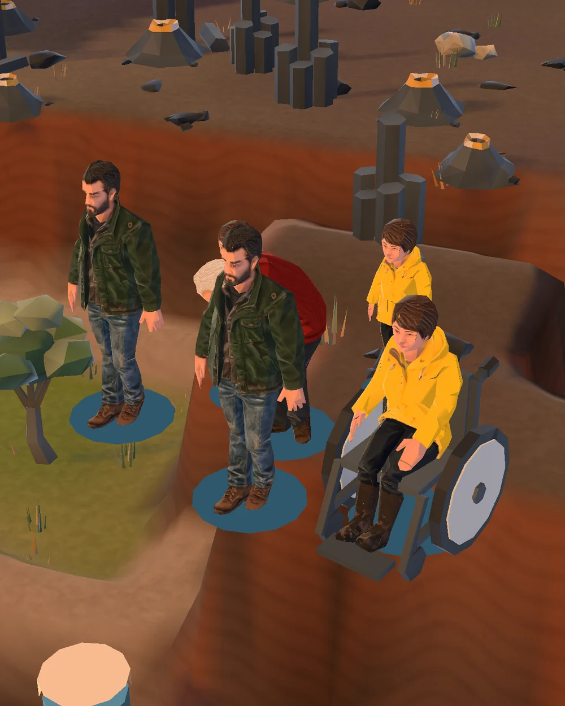

RESQ · Mixed reality · Meta Quest 3 and 3S
Small worlds. Big saves.
A rescue strategy game played on your real table. A miniature valley is in trouble, and everyone in it needs a way home.
- Read the danger that’s coming
- Place your plan with your hands
- Bring every resident home
- Bonus: find the second way to win

- Water rising in 10s — check the forecast
Alder Valley · First Crossing · Editor render
01/05Floods
Alder Valley
A stepped river valley with cedar houses, terraced fields, a stone viaduct, a bright rescue depot, and a mountain reservoir.
First mission
First Crossing
Learn bridge placement, flood forecasts, and a first boat route.

- 1:00Reservoir inflow increases
- 2:20Low-dock water rises toward closure threshold
- 4:00Final moderate surge tests the placed barrier

Alder Valley · First Crossing · Editor render
- 8 residents
- 2 step-free
- 12 supply
- 6:00
- Emergency Bridge×1 · 3 supply
- Flood Barrier×2 · 2 supply
- Rescue Boat×1 · 4 supply
- Beacon×1 · 1 supply
- M1First Crossing
- M2The Lower Road
- M3Two Banks
- M4Power Before Water
- M5The Long Way Home
02/05Wildfire
Emberwood
An inhabited forest reserve with a lookout tower, sawmill, campsite, orchard, and hillside water tanks.
First mission
A Line in the Trees
Learn fuel removal and moisture.

- 0:50A marked dry-cell cluster ignites
- 2:40Steady wind advances heat toward the short path
- 4:20The first cooled strip becomes safe to cross

Emberwood · A Line in the Trees · Editor render
- 10 residents
- 2 step-free
- 13 supply
- 6:00
- Firebreak×2 · 2 supply
- Sprinkler×1 · 3 supply
- Generator×1 · 3 supply
- Beacon×3 · 1 supply
- M1A Line in the Trees
- M2Last Bus from Camp
- M3Water Is a Route
- M4When the Wind Turns
- M5The Green Corridor
03/05Snow and avalanches
Frostline
A snow-covered alpine settlement with a funicular, weather observatory, cable station, avalanche fences, and steep terraces.
First mission
Hold the Station
Introduce structure-specific support and vertical transfers.

- 1:00A support begins losing stability
- 2:40Meltwater increases load
- 4:20A minor tremor tests bracing

Frostline · Hold the Station · Editor render
- 10 residents
- 2 step-free
- 14 supply
- 6:00
- Brace×3 · 2 supply
- Cable Winch×1 · 3 supply
- Generator×1 · 3 supply
- Beacon×2 · 1 supply
- M1Hold the Station
- M2Above the Snowline
- M3The Quiet Slope
- M4Cable and Current
- M5Dawn at Frostline
04/05Tides and storm power
Tidemark
A fictional coastal archipelago with pale plaster houses, boatyards, a lighthouse, raised walkways, and a tidal market.
First mission
Between Two Tides
Learn readable tide windows.

- 1:00Tide begins rising
- 3:00Causeway closes
- 5:00High landing becomes optimal for unloading

Tidemark · Between Two Tides · Editor render
- 12 residents
- 2 step-free
- 15 supply
- 7:00
- Rescue Boat×2 · 4 supply
- Emergency Bridge×1 · 3 supply
- Beacon×2 · 1 supply
- Power Relay×1 · 2 supply
- M1Between Two Tides
- M2Keep the Light
- M3The Floating Market
- M4Storm Switch
- M5Harbor of Everyone
05/05Lava and heat
Cinder Reach
A volcanic island research town with basalt terraces, a geothermal station, orchards, a ferry terminal, and cooling channels.
First mission
A Path Through Heat
Introduce temporary cooled crossings.

- 1:10Lava advances into a marked channel
- 3:30First cooling opportunity appears
- 5:30Cooled segment begins reheating

Cinder Reach · A Path Through Heat · Editor render
- 12 residents
- 2 step-free
- 16 supply
- 7:00
- Lava Cooler×2 · 3 supply
- Emergency Bridge×1 · 3 supply
- Beacon×3 · 1 supply
- Heat Shelter×1 · 4 supply
- M1A Path Through Heat
- M2Borrowed Safety
- M3The Cooling Works
- M4Three Ways Out
- M5Every Little Life
How a rescue goes
See it coming. Then make the move.

01Forecast while placing a barrierEditor render Test an idea before you spend it
Hold a tool over the board and the real simulation runs ahead: green cells stay dry, red ones would flood.

02Routing a boat to a waiting groupEditor render Your hands give the orders
Pinch a tool and drop it on a glowing spot. Pick a group, then where they go. Nobody can be picked up and carried: only the plan moves people.

03Results after a rescueEditor render Find out why it worked
Results show who reached safety, and a short debrief names the moment that mattered.

04Choosing a missionEditor render Then find another way
Every mission has two quite different winning plans, and 30 challenges change the rules once you know them.
Ways to play
Nobody needs two steady hands.
These are the game’s real settings, remembered between sessions.
Settings
- ControlsTwo handsOne handHands-freeEvery mission finishes with either hand alone, or with no hands: look at a control until it fills.
- Text size100%125%150%Menus, warnings, the tool tray and the run controls all grow.
- PaceStandardRelaxedCommandRelaxed slows the hazards. Command steps time forward 1 or 5 seconds at a time.
- ContrastGlassHigh contrastHigh contrast puts solid panels behind all text.
- EffectsFullReducedReduced stops flicker and pulsing without hiding any hazard.
- MissionsIn orderOpen playOpen play unlocks everything. Each world’s first mission is always open.